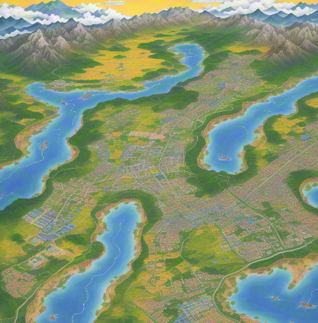

We are a premier retailer of ICT gadgets and computer products in Australia, fueled by an unwavering passion for technology and a dedication to delivering top-notch products and services to our valued customers. Our team's culture revolves around fostering innovation, fostering teamwork, and prioritizing customer satisfaction. We are relentless in our pursuit to stay ahead, continuously exploring emerging technologies and trends. Our committed team strives diligently to guarantee a flawless shopping experience for every customer.
Over the years, we have been recognized for our excellence in the industry. We are proud to hold Golden Wheat Award, which is a testament to our commitment to quality and customer satisfaction.
Location Map
Our store is conveniently located at 155 Main Street, Sydney, Australia. If you're coming by public transport, the nearest bus stop is George St opp Grosvenor St and the closest subway station is Wynyard Station. From there, it's just a short walk to our store. If you're driving, there is ample parking available in the nearby Grosvenor Place parking lot.
Contact Details
Email: i666@6666.com
Phone: +66 6666 66666
Address: 155 Main Street, Sydney, Australia